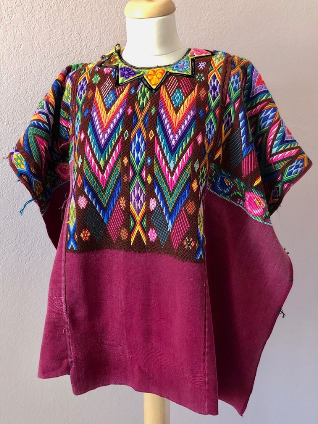

Origen claro
Cada pieza muestra su municipio y departamento, para reconocer a las comunidades detrás de ella.
En RaícesGT acercamos los textiles tradicionales guatemaltecos a nuevas generaciones, resaltando sus colores, sus diseños y el trabajo que hay detrás de cada pieza.


Cada traje guatemalteco guarda conocimientos que pasan de generación en generación: técnicas, símbolos y colores que identifican a cada pueblo. Queremos que ese conocimiento siga vivo y que más personas puedan conocerlo y llevarlo con orgullo.
Por eso seleccionamos cada pieza pensando en su calidad y autenticidad, la presentamos con información clara sobre su origen y te atendemos de forma directa para que encuentres la prenda ideal desde cualquier lugar.
Cada pieza muestra su municipio y departamento, para reconocer a las comunidades detrás de ella.
Un bordado a mano puede llevar semanas de trabajo. Lo presentamos con el respeto que merece.
Elegimos cada traje por su calidad, sus detalles y su autenticidad.
Te asesoramos por WhatsApp con medidas, disponibilidad y envíos antes de tu compra.
Busca en la colección por región, tipo de prenda o color.
Escríbenos por WhatsApp y te confirmamos precio, medidas y disponibilidad.
Acordamos la forma de pago y los detalles de tu pedido.
Enviamos a diferentes departamentos de Guatemala y te damos seguimiento.
Detrás de cada huipil, corte y faja hay tejedoras y bordadoras que mantienen viva la tradición. Comprar un textil artesanal es también reconocer su trabajo y su conocimiento.